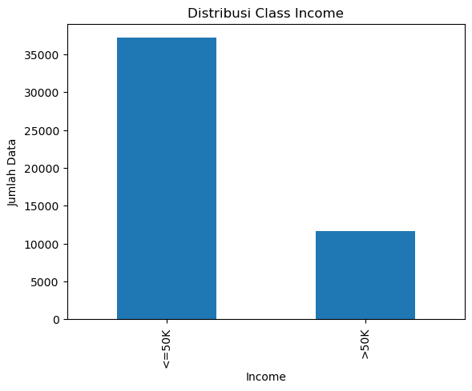

Mengukur jarak dengan data campuran dataset data sensus penduduk Amerika Serikat#
import pandas as pd
# baca dataset
df = pd.read_csv("dataaaaaa.csv", delimiter=';')
# lihat 5 data pertama
print(df.head())
---------------------------------------------------------------------------
ModuleNotFoundError Traceback (most recent call last)
Cell In[1], line 1
----> 1 import pandas as pd
3 # baca dataset
4 df = pd.read_csv("dataaaaaa.csv", delimiter=';')
ModuleNotFoundError: No module named 'pandas'
penjelasan:
Kode di atas tersebut digunakan untuk membaca dan menampilkan data dari file CSV menggunakan Python. Pada baris import pandas as pd, program mengimpor library pandas yang berfungsi untuk mengolah dan menganalisis data. Penulisan as pd bertujuan agar pemanggilan fungsi pandas menjadi lebih singkat. Selanjutnya, pada pd.read_csv(“dataaaaaa.csv”, delimiter=’;’), program membaca file dataset bernama dataaaaaa.csv dengan pemisah antar kolom berupa tanda titik koma (;). Data yang dibaca kemudian disimpan dalam variabel df dalam bentuk DataFrame, yaitu tabel yang memiliki baris dan kolom. Setelah itu, perintah print(df.head()) digunakan untuk menampilkan lima baris pertama dari dataset, sehingga kita dapat melihat gambaran awal data seperti nama kolom dan isi data. Langkah ini biasanya dilakukan pada tahap data understanding untuk memastikan data telah terbaca dengan benar.
print("Jumlah baris dan kolom:")
print(df.shape)
print("\nNama kolom:")
print(df.columns)
print("\nTipe data:")
print(df.dtypes)
Jumlah baris dan kolom:
(48842, 15)
Nama kolom:
Index(['age', 'workclass', 'fnlwgt', 'education', 'educational-num',
'marital-status', 'occupation', 'relationship', 'race', 'gender',
'capital-gain', 'capital-loss', 'hours-per-week', 'native-country',
'income'],
dtype='object')
Tipe data:
age int64
workclass object
fnlwgt int64
education object
educational-num int64
marital-status object
occupation object
relationship object
race object
gender object
capital-gain int64
capital-loss int64
hours-per-week int64
native-country object
income object
dtype: object
penjelasan:
Kode diatas tersebut digunakan untuk melihat informasi dasar dari dataset. Perintah df.shape menampilkan jumlah baris dan kolom pada data, sehingga kita mengetahui banyaknya data dan fitur yang tersedia. Perintah df.columns digunakan untuk menampilkan nama-nama kolom yang ada dalam dataset. Sedangkan df.dtypes digunakan untuk melihat tipe data dari setiap kolom, misalnya apakah berupa angka atau teks. Informasi ini membantu kita memahami struktur data sebelum melakukan analisis lebih lanjut.
print("\nStatistik Deskriptif:")
print(df.describe())
Statistik Deskriptif:
age fnlwgt educational-num capital-gain \
count 48842.000000 4.884200e+04 48842.000000 48842.000000
mean 38.643585 1.896641e+05 10.078089 1079.067626
std 13.710510 1.056040e+05 2.570973 7452.019058
min 17.000000 1.228500e+04 1.000000 0.000000
25% 28.000000 1.175505e+05 9.000000 0.000000
50% 37.000000 1.781445e+05 10.000000 0.000000
75% 48.000000 2.376420e+05 12.000000 0.000000
max 90.000000 1.490400e+06 16.000000 99999.000000
capital-loss hours-per-week
count 48842.000000 48842.000000
mean 87.502314 40.422382
std 403.004552 12.391444
min 0.000000 1.000000
25% 0.000000 40.000000
50% 0.000000 40.000000
75% 0.000000 45.000000
max 4356.000000 99.000000
penjelasan:
Kode di atas tersebut digunakan untuk menampilkan statistik deskriptif dari data numerik dalam dataset. Perintah print(“\nStatistik Deskriptif:”) hanya berfungsi untuk menampilkan judul agar hasil yang muncul lebih mudah dibaca. Sedangkan df.describe() digunakan untuk menampilkan ringkasan statistik dari setiap kolom yang bertipe angka. Statistik yang ditampilkan biasanya meliputi jumlah data (count), nilai rata-rata (mean), standar deviasi (std), nilai minimum (min), nilai tengah atau median (50%), serta nilai maksimum (max). Informasi ini membantu kita memahami gambaran umum dan sebaran data sebelum melakukan analisis lebih lanjut.
df = df.replace("?", pd.NA)
print("Jumlah Missing Value tiap kolom:")
print(df.isna().sum())
Jumlah Missing Value tiap kolom:
age 0
workclass 2799
fnlwgt 0
education 0
educational-num 0
marital-status 0
occupation 2809
relationship 0
race 0
gender 0
capital-gain 0
capital-loss 0
hours-per-week 0
native-country 857
income 0
dtype: int64
penjelasan:
Kode di atas tersebut digunakan untuk mengecek data yang hilang (missing value) dalam dataset. Pada baris df = df.replace(“?”, pd.NA), program mengganti tanda “?” yang ada di dataset menjadi nilai kosong (NA) agar dapat dikenali sebagai data yang hilang oleh pandas. Setelah itu, perintah print(“Jumlah Missing Value tiap kolom:”) digunakan untuk menampilkan judul hasil. Kemudian df.isna().sum() berfungsi untuk menghitung jumlah data yang kosong pada setiap kolom. Dengan kode ini, kita dapat mengetahui kolom mana saja yang memiliki data yang hilang dan berapa jumlahnya, sehingga dapat dipertimbangkan untuk proses pembersihan data pada tahap selanjutnya.
print("Jumlah class pada income:")
print(df['income'].value_counts())
Jumlah class pada income:
income
<=50K 37155
>50K 11687
Name: count, dtype: int64
penjelasan:
Kode di atas tersebut digunakan untuk mengetahui jumlah data pada setiap kelas di kolom income. Perintah print(“Jumlah class pada income:”) hanya berfungsi untuk menampilkan judul agar hasilnya lebih jelas. Sedangkan df[‘income’].value_counts() digunakan untuk menghitung berapa banyak data yang termasuk dalam setiap kategori pada kolom income. Dengan kode ini, kita dapat melihat jumlah data pada masing-masing kelas, sehingga kita mengetahui apakah distribusi data pada kolom income seimbang atau tidak. Informasi ini penting untuk memahami kondisi data sebelum dilakukan analisis atau pemodelan.
import matplotlib.pyplot as plt
df['income'].value_counts().plot(kind='bar')
plt.title("Distribusi Class Income")
plt.xlabel("Income")
plt.ylabel("Jumlah Data")
plt.show()

penjelasan:
Kode di atas ini digunakan untuk membuat grafik batang yang menunjukkan jumlah data di tiap kategori income. Pertama, dihitung berapa banyak data untuk setiap kategori di kolom income. Lalu hasilnya digambarkan sebagai batang, di mana tinggi batang menunjukkan jumlah data. Grafik ini diberi judul “Distribusi Class Income”, sumbu-x menunjukkan kategori income, dan sumbu-y menunjukkan jumlah data. Dengan begitu, kita bisa dengan mudah melihat kategori mana yang lebih banyak atau lebih sedikit datanya.
numeric = [
"age",
"fnlwgt",
"educational-num",
"capital-gain",
"capital-loss",
"hours-per-week"
]
nominal = [
"workclass",
"occupation",
"relationship",
"race",
"native-country"
]
ordinal = [
"education"
]
binary = [
"gender",
"income"
]
print("Fitur Numerik:", numeric)
print("Fitur Nominal:", nominal)
print("Fitur Ordinal:", ordinal)
print("Fitur Binary:", binary)
Fitur Numerik: ['age', 'fnlwgt', 'educational-num', 'capital-gain', 'capital-loss', 'hours-per-week']
Fitur Nominal: ['workclass', 'occupation', 'relationship', 'race', 'native-country']
Fitur Ordinal: ['education']
Fitur Binary: ['gender', 'income']
penjelasan:
Data di atas sini dibagi menjadi empat tipe utama. Numeric adalah kolom berisi angka seperti umur, jam kerja, atau keuntungan modal, yang bisa dihitung rata-rata atau maksimum. Nominal adalah kolom kategori tanpa urutan, misalnya pekerjaan, ras, atau negara asal, yang hanya membedakan kelompok. Ordinal adalah kategori dengan urutan, seperti tingkat pendidikan dari SMA hingga PhD, di mana ada tingkatan tapi jaraknya tidak sama. Sedangkan binary hanya punya dua pilihan, misalnya gender atau income, yang memudahkan analisis kategori dua opsi. Pembagian ini membantu memahami jenis data setiap kolom agar analisis lebih tepat.
for col in numeric:
print("\n===== Statistik untuk", col, "=====")
print("Jumlah Data :", df[col].count())
print("Mean :", df[col].mean())
print("Median :", df[col].median())
print("Std Dev :", df[col].std())
===== Statistik untuk age =====
Jumlah Data : 48842
Mean : 38.64358543876172
Median : 37.0
Std Dev : 13.71050993444322
===== Statistik untuk fnlwgt =====
Jumlah Data : 48842
Mean : 189664.13459727284
Median : 178144.5
Std Dev : 105604.02542315713
===== Statistik untuk educational-num =====
Jumlah Data : 48842
Mean : 10.078088530363212
Median : 10.0
Std Dev : 2.5709727555918307
===== Statistik untuk capital-gain =====
Jumlah Data : 48842
Mean : 1079.0676262233324
Median : 0.0
Std Dev : 7452.019057653448
===== Statistik untuk capital-loss =====
Jumlah Data : 48842
Mean : 87.50231358257237
Median : 0.0
Std Dev : 403.0045521244552
===== Statistik untuk hours-per-week =====
Jumlah Data : 48842
Mean : 40.422382375824085
Median : 40.0
Std Dev : 12.39144402425593
penjelasan:
Kode di atas ini digunakan untuk melihat statistik dasar setiap kolom numerik di dataset. Untuk setiap kolom, kita mengecek jumlah data yang ada, rata-rata (mean), nilai tengah (median), dan standar deviasi (std dev) yang menunjukkan sebaran data dari rata-rata. Dengan begitu, kita bisa memahami karakteristik angka di tiap kolom, misalnya apakah nilai-nilainya cenderung besar, kecil, atau tersebar luas, sehingga analisis data menjadi lebih mudah.